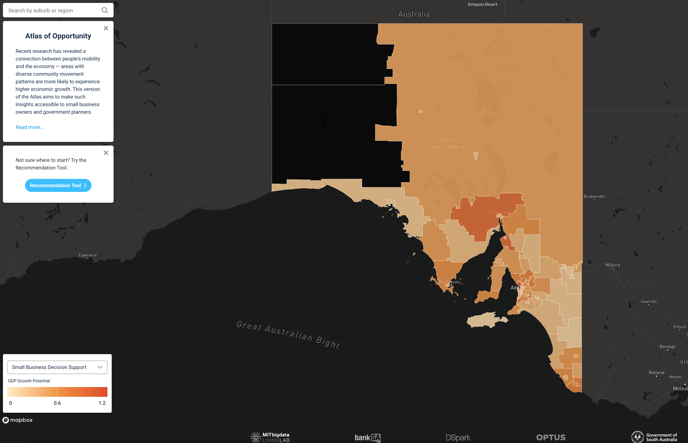
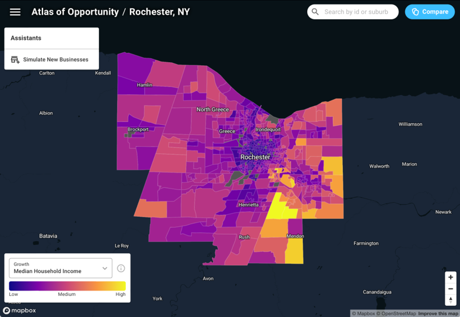
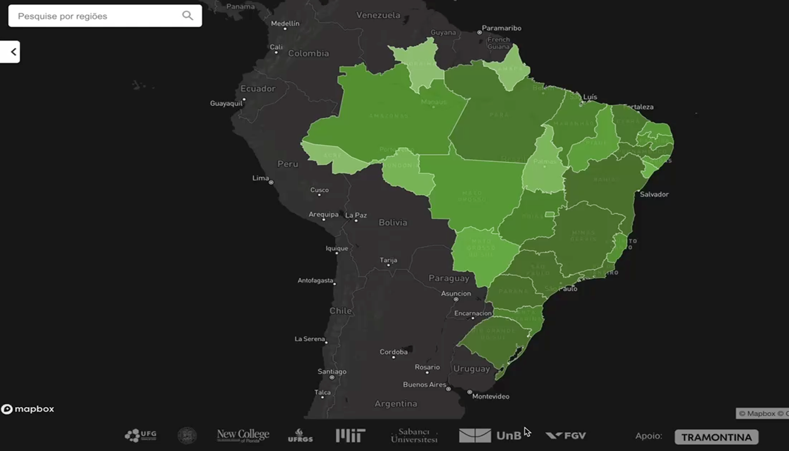

Applied AI · Decision Intelligence · Geospatial Analytics
Building AI and data science systems that turn large-scale behavioral data into practical decisions.
I am a Research Scientist at MIT Sloan / Initiative on the Digital Economy and Part-Time Teaching Faculty at Northeastern University. My work focuses on applied AI, LLM-enhanced analytics, privacy-safe data science, mobility and geospatial modeling, customer behavior, and decision-support platforms for business and public-sector applications.
Applied AI & LLM Systems
LLM-enhanced analytics, RAG/tool-use concepts, model-based decision support, responsible AI, and research-to-platform translation.
Mobility & Location Intelligence
Geospatial analytics, gravity models, market potential estimation, store closure modeling, accessibility analysis, and customer-flow prediction.
Privacy-Safe Decision Science
Behavioral scoring, privacy-safe forecasting, SME performance prediction, network-based features, and stakeholder-facing decision tools.
Industry-Relevant Research Focus
My recent work connects AI research with deployable systems for decision-making. I have led and contributed to projects involving financial reliability prediction, retail space allocation, market potential estimation, urban accessibility, customer behavior modeling, and AI/GIS decision platforms. These projects have involved collaborations across finance, retail, telecom, technology, healthcare, and public-sector partners.
Selected Platform Work
The Atlas of Opportunity is an AI/GIS-based decision-support platform that integrates large-scale datasets, predictive models, visualization, and scenario analysis to support small businesses, public agencies, and strategic planning.



